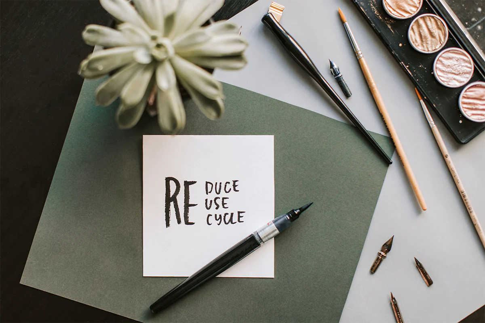
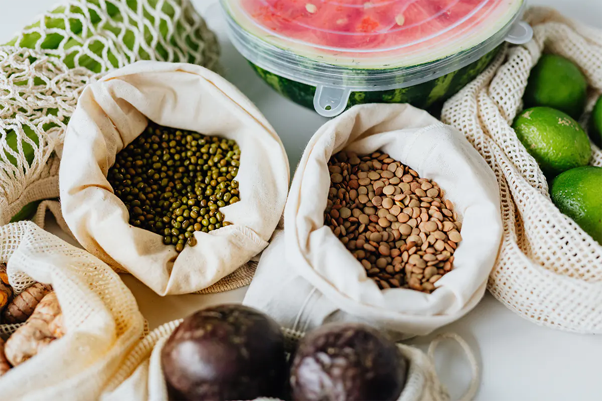

Living a Greener Lifestyle
Discover practical tips and strategies for adopting a more sustainable and eco-friendly lifestyle. Small changes in your daily routine can make a significant difference in reducing your environmental footprint.

- Learn how to reduce waste and protect the environment by following the principles of reduce, reuse, and recycle
- Explore practical strategies for lowering your ecological impact and fostering a more sustainable planet
- Discover tips to minimize waste and contribute to a greener world
- Find eco-friendly methods of transportation to reduce emissions and improve air quality
- Explore sustainable transportation choices that benefit the environment and promote a healthier Earth
- Understand how your transportation decisions can contribute to a more positive environmental impact
- Investigate energy-saving techniques for your home and everyday routines
- Uncover how minor adjustments can result in substantial energy preservation, reduced utility costs, and a more environmentally friendly tomorrow
- Learn about ways to conserve energy and promote a sustainable future

- Delve into sustainable food practices and their impact on the environment
- Examine how your diet can affect the planet's well-being and promote environmental sustainability
- Discover guidance for making conscientious and environmentally friendly food choices